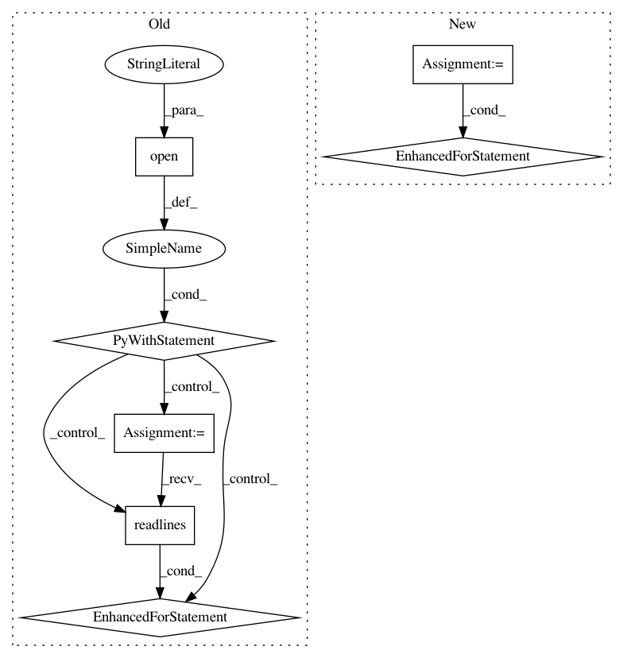

04629674f5f9e65bd35565b329f8c892a16865a4,src/python/twitter/pants/tasks/jvm_compiler_dependencies.py,Dependencies,findclasses,#Dependencies#Any#,42
Before Change
classes_by_target_by_source = defaultdict(lambda: defaultdict(set))
if os.path.exists(self.depfile):
with open(self.depfile, "r") as deps:
for dep in deps.readlines():
src, cls = dep.strip().split("->")
sourcefile = os.path.relpath(os.path.join(self.outputdir, src.strip()), get_buildroot())
if sourcefile in sources:
classfile = os.path.relpath(os.path.join(self.outputdir, cls.strip()), self.outputdir)
target = target_by_source[sourcefile]
relsrc = os.path.relpath(sourcefile, target.target_base)
classes_by_target_by_source[target][relsrc].add(classfile)
return classes_by_target_by_source
After Change
sources.add(src)
classes_by_target_by_source = defaultdict(lambda: defaultdict(set))
for sourcefile, classfiles in self.classes_by_source.items():
if sourcefile in sources:
target = target_by_source[sourcefile]
relsrc = os.path.relpath(sourcefile, target.target_base)
classes_by_target_by_source[target][relsrc] = classfiles
return classes_by_target_by_source
In pattern: SUPERPATTERN
Frequency: 3
Non-data size: 7
Instances
Project Name: pantsbuild/pants
Commit Name: 04629674f5f9e65bd35565b329f8c892a16865a4
Time: 2012-07-07
Author: benjy@foursquare.com
File Name: src/python/twitter/pants/tasks/jvm_compiler_dependencies.py
Class Name: Dependencies
Method Name: findclasses
Project Name: qq547276542/Agriculture_KnowledgeGraph
Commit Name: 1c5d3fae1644dec2c31f45044138b26d5b9f25f2
Time: 2018-11-21
Author: kjmd2d@sina.cn
File Name: relationExtraction/data/preprocessing.py
Class Name: get_json_file
Method Name: get_rel_json
Project Name: pantsbuild/pants
Commit Name: 79ba58636288f95be1a156f02623d46b0eb242ea
Time: 2019-09-07
Author: ericarellano@me.com
File Name: tests/python/pants_test/reporting/test_reporting_integration.py
Class Name: TestReportingIntegrationTest
Method Name: test_invalidation_report_output